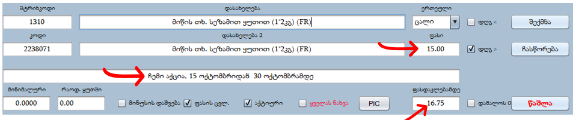

აქციის შექმნა
აქცია იქმნება პროდუქციის ფანჯრიდან , მოვიძიოთ პროდუქცია , რომელზეც აქცია გვინდა რომ გავაკეთოთ, მოვნიშნავთ (გავალურჯებთ) და დავაჭიროთ ქვედა მარჯვენა კუთხეში არსებულ მწვანე ისარს.
ამოტანილ ფანჯარაში მოვძებნოთ „ფასდაკლებამდე“ - ველი.
„ფასდაკლებამდე“- ჩავწეროთ პროდუქციის ამჟამინდელი ფასი, ხოლო „ფასი“ - ში ჩავწეროთ სააქციო ფასი. აქციის გაკეთების დროს რეკომენდირებულია კომენტარში მიუთითოთ, რომ ეს არის ჩვენი აქცია. საბოლოო შედეგი გამოიყურება ასე:
დავაჭიროთ „ჩასწორება“-ს.
ხელით შექმნილი აქცია ავტომატურად აქ უქმდება, ამიტომ, ხელითვე უნდა გავაუქმოთ. გასაუქმებლად ფასდაკლებამდე ფასში ვწერთ 0 -ს , ხოლო ფასში სარეალიზაციო ფასს, ვაჭერთ ჩასწორებას.
პროდუქციას სტატუსის ზოლში ჩაუჯდება აქციის მაჩვენებელი ნიშანი :

სააქციო ფასის ამობეჭდვის დროს ფას მაჩვენებელი ამოვა შემდეგი ფორმატით :